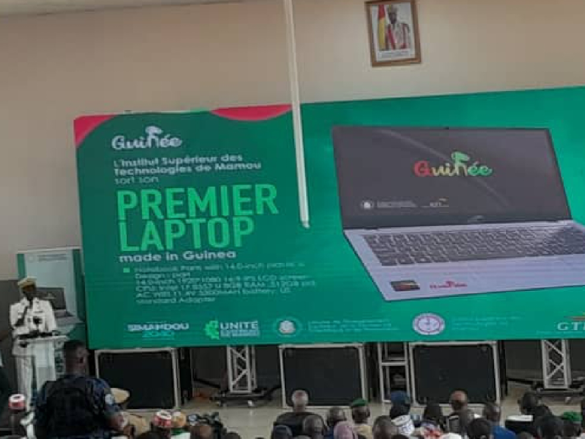
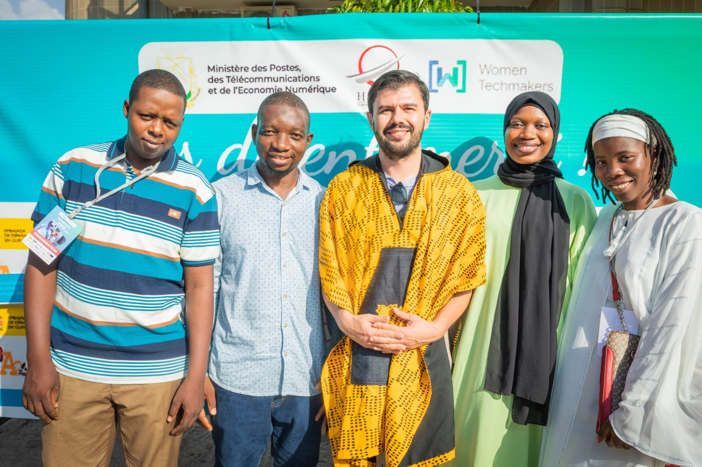
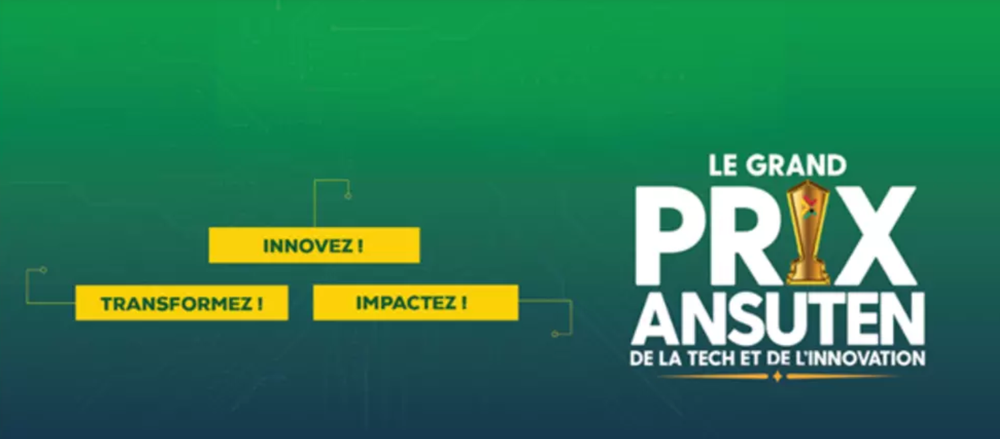

Unité d'assemblage d'ordinateur en Guinée
Article rédigé par guinee360.com
Lire l'article »

1ère Édition de la Startup Week Guinée
Article rédigé par guineenews.org
Lire l'article »

ANSUTEN: Grand Prix de la Tech et de l'innovation
Article rédigé par rfi.fr
Lire l'article »